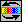
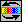
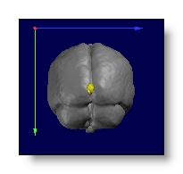
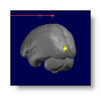

MRIs and Volumes Display
Buttons


 

Mouse
Changing Isosurface value
Keyboard
Menus
Filters menu
Options menu
New Isosurface cutting value
New Isosurface quality
Set orientation
Set new origin
Show / hide
Depth Shifting trick
Technical points
Initial background threshold value
Guessing what the volume actually is
Searching for the orientation
'Depth shifting' trick
Talairach coordinates in MRI
MRI - Buttons
Rendering 
Toggles between 4 display modes (see here for basic explanations on rendering):
-
Up to three orthogonal, transparent slices (useful when superimposed on another volume!):
If the Volume has been detected as the results of some computations, transparency is inversely proportional to the intensity. Otherwise, transparency is constant.
-
Up to three orthogonal, opaque slices:
You can select which planes you want to see or hide, and move them with the mouse. Brightness and contrast can be adjusted.
-
Transparent isosurface:
The surface is transparently drawn, so you can link other windows into it , and see through its surface.
-
Opaque isosurface:
The surface is drawn opaque, which will hide any other contained linked windows . In this case use the previous renderings (or the infamous "Depth-shift trick" for the inner window).
Change the Isosurface cutting value
Dynamically adjust the isosurface cutting value (or background threshold value). By holding the mouse's right button down, moving upward increases the isosurface cutting value (therefor "shrinking" the volume appearance), and the opposite when moving downward.
During this process, only a low resolution version of the volume is displayed, to gain speed. Only when releasing the button the full resolution isosurface will be computed, and displayed. You can have a short time lag before the final isosurface appears, due to this computationally expensive process. Also, some geometrical details hidden in the low resolution display will appear in the higher resolution. You will get use to it, and you can re-adjust very quickly by again using the mouse, or with the options menu .
For those interested in technical details, up to 6 volumes are cached by the isosurface functions. The first access to the isosurface will copy the volume, then filters it, and later calls will only use this cache, again, for an overall gain in speed.
Colorize the exterior surface
Usually, the exterior surface of a volume appears with a predefined exterior color (kind of shiny, silver-like). When activating this button, you can assign a color of your choice to the exterior surface. This can be helpful to discriminate between different volumes (or just because you like colors).
The colors at your disposal are the ones in the current Color Table , so you may have to change it to have the right colors. The exterior surface actually "has a value" set to the current Isosurface cutting value, so its color is the one picked in the color table with this value. This means that changing the Isosurface cutting value will also change the color (no headache, this is intuitive). Also, changing the Brightness level (or the Contrast level) will also affect the color chosen, and this is rather the way to go.
Here is an example, with the same Isosurface cut, first without the colorization, then with colorization and with two different brighness levels:

And another example with the same brightness level, but with increased Isosurface cutting values:
And finally, if a volume has been detected as a ROI volume , many exterior colors are used, one for each underlying ROI values:
Editing / cutting into the volume
You have here a set of tools (currently 5) to help you edit / cut / remove some unwanted parts of the current volume:
- Deleting a centered sphere
- Blurring within a centered sphere
- Deleting a cylinder perpendicular to surface
- Deleting a sphere perpendicular to surface
- Deleting below a plane perpendicular to surface
You switch between these tools by repeatedly pressing on the cutting button . And you quit the editing mode after the last tool, or after pressing the Esc key.
Every tool will graphically display itself as some sort of reddish, semi-transparent object . The tool will adapt itself in real time to the current position your pointing at.
There will also be some hint showing up at the bottom of the display, to remind you in which editing mode you currently are.
Finally, simply Middle-clicking with the mouse will apply the tool at your current position, deleting all data inside.
Deleting Centered Sphere
A reddish sphere appears:
- centered under the current mouse position
- its radius can be adjusted with a right-click + moving left-right
Useful to delete big floating blobs, or clipping some round regions in the volume:
Blurring Centered Sphere
3 concentric reddish spheres appear:
- centered under the current mouse position
- their radiuses can be adjusted with a right-click + moving left-right
-
The inner sphere shows where the maximum blurring
will occur.
No blurring will be applied past the outer sphere.
The in-between sphere shows the half-blurring limit.
Very useful to anonymize a full head, so that the individual's face could not be recognizable anymore. You might have to apply the filter a few times to achieve the desired level of blurriness, while changing location a bit while doing so. And of course, work on a copy of the original head!
Note that the internal parts of the MRI get also blurred, and not only the face, which might also affect the brain itself. So don't attempt to extract the brain on the blurred head, the latter is merely for display and not other processing !
Deleting Cylinder perpendicular to surface
A reddish cylinder appears:
- centered under the current mouse position
- its radius can be adjusted with a right-click + moving left-right
- its length can be adjusted with a right-click + moving up-down
- its direction is the local gradient ("perpendicular" to data)
This is useful to punch all sorts of holes that are not spherically shaped:
Deleting Sphere perpendicular to surface
A reddish sphere appears:
- it is tangent to the current surface it touches, always pointing outwardly
- its radius can be adjusted with a right-click + moving left-right
- it uses the local gradient ("perpendicular" to data) to point "outside"
This sphere differs from the first one by how it lands on the data. First one is centered on the position you point. While this one simply touches the surface of the volume. This is useful to delete stuff floating outside of an object of interest (which will remain intact):
Deleting below plane perpendicular to surface
A reddish plane appears, shown as a big disk:
- centered under the current mouse position
- its normal is the local gradient ("perpendicular" to data)
- it might be necessary to zoom out the object to have a better view of the cutting plane whereabout
This will cut all data on the one side of the plane shown by the gradient vector:
Other hints
-
The cutting tools are all fully in 3D, you might need to rotate your object at hand to get the right view and the right shot!
-
If you use some clipping plane, then you can totally cut inside the volume...
-
Before you begin, make and use a copy of the volume you want to edit, so as to not alter the original file!
-
Save file often, every time when you are fine with the current results. Then you can use the File | Revert to undo the last operation!
-
All operations incorporate some kind of anti-aliasing, so that the resulting cuts look natural.
However this does not apply to masks , which are rather cut "sharply". This is to prevent creating new intermediate values, a definitive no-no for masks or ROIs.
Clipping plane Coronal 
Select a Coronal clipping ("cutting") plane (see below).
Clipping plane Transverse 
Select a Transverse clipping ("cutting") plane (see below).
Clipping plane Sagittal
Select a Sagittal clipping ("cutting") plane.
If in the slice rendering modes, it simply toggles the planes on or off:
If in the volume rendering modes, it cuts the volume, showing one half first, then the second half, and then off again:


In the case above the clippping planes can also be cumulated, then only the intersection of the 2 or 3 planes are clipped (note that it will become more computationally demanding):
All in all, you have 8 clipping combinations, 2 in each axis, allowing to clip any octant.
See also the related topic of searching and displaying the orientation .
Slice mode
You switch to a serie of 2D slices:

By pressing many times on the button, you have access to coronal,
transverse and sagittal displays.
The previous 3D display is still used (and might be modified as well), following the last slice, as to give an idea of where the slices are actually cutting.
You can still rotate the slices, if the orientation does not fit your taste.
More or less slices 
While keeping the first and last slices position fixed, this will either add or remove intermediate slices. If pressing the Shift key at the same time, it either add all the slices between the current extremes, or remove all slices at once.
Move first slice 
Move the first slice forward or backward, the meaning of it being dependent of what is the current slice mode (coronal, transverse or sagittal). If pressing the Shift key at the same time, it will step faster each time.
Move last slice 

Move the last slice forward or backward, the meaning of it being dependent of what is the current slice mode (coronal, transverse or sagittal). If pressing the Shift key at the same time, it will step faster each time.
Show Max
Draws a symbol at the maximum position, which can be either:
-
A transparent circle, always on top of the display / volume, even if the max itself is not directly in sight:
-
A solid 3D cross, visible only if the perspective allows it:
The slices are not automatically positionned at the max. If you want to do that use the Find Max position button (below).
Find Max position 
This will position the current cutting plane(s) at the maximum position.
It will not automatically show where the max is on the cutting plane, though. To that aim, use the Show Max button (above).
Here the max is shown as a 3D cross, and the Find Max position is not activated (top pictures), then activated (bottom pictures):
Brightness
Only when you have some clipping planes active, it changes the brightness of the slices displayed. It also works in the special case of isosurface coloring .
Technically, there is a mapping from values to colors, and increasing the brightness decreases the maximum value (indicated above the color scale) mapped to the maximum color, therefor making lower values appear brighter:
Contrast
Contrast does not change the maximum value mapped to the maximum color, but changes the slope of the mapping, increasing or decreasing the color differences between low and high values.
Low contrast is achieved through a linear mapping of the values to the colors. Higher contrasts are done by an exponential mapping (as a Gamma correction), making low values appear dimmer, and high values appear brighter:
Note in the pictures above, that the maximum mapped value has not changed. Though the appearance of the color scale (on the right) has changed, correctly reflecting the non-linear color mapping (more colors for higher values when increasing contrast).
Color auto scaling
Sets the maximum volume value to the maximum color value. Put it another way: automatically sets the brightness to match and correctly display the data. Consequently, the brightness buttons become inactive, but still the contrast can be adjusted.
Color modes
Cycles through different color tables (black to white, white to black, black to yellow to white, etc...):
MRI - Mouse
Go here for the mouse actions common to all views.
Changing the Isosurface cutting value
While in Isosurface mode, by holding the mouse's right button down, moving upward will increase the isosurface cutting value, therefore "shrinking" the volume. Conversely, moving downward will increase the isosurface cutting value, "inflating" the volume.
The visual hints associated with the isosurface:
MRI - Keyboard
See the general 3D keyboard and basic window keyboard actions.
MRI - Menus
Filters menu
A whole bunch of filters are here for you to play with, enjoy!
The filters apply to the current MRI at its current state. Here are the main families of filters:
Denoising
All you need for cleaning up MRIs: Gaussian, Median, Mean...
Arithmetic
Arithmetic operation like intensity rescaling.
Histogram
Comuting histograms, Equalization, Compacting equalized histograms.
Mask
Thresholding, binarization, combining & applying masks, plus a bunch of operations on the neighborhood density.
Morphology
Classical Dilate / Erode / Open / Close, plus some more like Thinning, Waterfall...
Partial Derivatives
Gradient, Laplacian, Hessian, k Curvature...
Statistics
Mean, SD, Coefficient of variation, Median, Mode, MAD, IQR, Entropy etc...
Brain processing
Bias Field Correction
Grey Matter segmentation
White & Grey matter segmentation
Skull stripping
Options menu
Specify another Isosurface thresold value
-
Ask the user for the new
Isosurface
(or
background threshold) cutting
value. This is equivalent to the
interactive isosurface
modifications, plus the ability to reset to the default value.
Specify another Isosurface downsampling quality
-
Big MRI's or volumes (dimensions > 128) have a downsampled
isosurface by default. It does not affect the data displayed on
slices,
but just the outer look of the surface. Downsampling makes the
surface lighter and faster in memory, at the expense of a loss of
spatial precision. If you want maximum precision (for that nice
snapshot...), change this downsampling to 1 (can eat up to 50 M of
memory!), and on the contrary, if you don't bother, you might
increase it (though not so useful above 2).
-
Force Cartool to assign an orientation meaning to the X,Y and Z axis,
like X pointing to the Right, Y pointing Anterior, and Z pointing up.
Reset orientation flags
-
Cancel the orientation specified by the user.
-
Set the voxel of origin, i.e. the one that will become coordinates (0,0,0).
-
Show or hides some summary about the data.
Show/hide color scaling
-
Does what it says (the color scaling is the thing on the right).
Show/hide axis
-
Show or hides the X, Y, Z axis.
-
Toggles on or off the orientation cues (top, bottom, left, right,
front, back) displayed on the sides of the window.
Flip along X axis
-
Permute the data along the X axis.
Flip along Y axis
-
Permute the data along the Y axis.
Flip along Z axis
-
Permute the data along the Z axis.
Flip X and Y axis
-
Permute the data along the X and Y axis.
Flip Y and Z axis
-
Permute the data along the Y and Z axis.
Flip X and Z axis
-
Permute the data along the X and Z axis.
'Depth shifting' trick (see here for full explanations)
-
Off
-
turn it off, back to normal behavior.
Light
-
allow a depth shift up to 12% of the maximum depth.
Medium
-
allow a depth shift up to 25% of the maximum depth.
High
-
allow a depth shift up to 37% of the maximum depth.
Maximum
-
allow a depth shift up to 50% of the maximum depth (half of the volume).
MRI - Technical points
Initial background threshold value
When opening (or modifying) a volume, it is needed to estimate the value below which is only noise (or null data), and above which are significant data. This value is called the background threshold value, and is also used as the inital isosurface cutting value .
Though it seems very intuitive to you when a looking at the data, remember you are using a very complex image analysis processing called the human visual system. But when it comes to an automatic process, things get tougher, so here is the method currently in use:
Cartool first computes a downsampled histogram of the volume, then cuts at the first valley following the first peak. The first peak usually designates the background voxels values, which are more or less the most numerous low values voxels. So cutting just after the peak end usually leads to the best results.
Remarks:
-
The algorithm also cares for the special case where a volume has been partially extracted and embeded into another one. This could give 2 low values peaks, one for value 0 (null/empty background), and another one with the original, noisy background.
-
It also behaves nicely (usually) even when values
have been redistributed over the full range of possible values,
modifying the dynamic range of the data, and giving a comb-like histogram.
- Finally, Cartool will restrain the background threshold value not to exceed 25% of the whole dynamic range of the data (it is supposed to be a background value).
Background threshold value can be modified later on, either through this option, or by the interactive isosurface process.
Background threshold value is implicitly used when searching for the orientation, and can therefor affect its proper detection.
Guessing what the volume actually is
Though not a vital point, Cartool tries to guess what the heck is that volume you just opened! It has absolutely no influence on the content itself , and it will not modify anything in it! However, Cartool uses its guess to tune up a few parameters for a better display, like the isosurface smoothness, the isosurface cutting value, the colors, etc...
Cartool will "guess" between these different types of volumes:
-
A Full Head, that means, an original scan that has not been (that much) modified. The surface is made "smooth", with default black-to-white colors:
-
A Segmented Brain, that is an original scan that has been clipped to some of its parts (grey matter, white matter, etc...). The surface is made "smooth", with black-to-white colors:
-
A Binary Mask, which contains only 2 values (0 and whatever). The surface is made to look "LEGO-like" as to reflect the idea of a mask, and with black-to-white colors:
-
A ROI Mask, which is made of regions with arbitrary fixed values. The surface is made to look "LEGO-like" as to reflect the idea of a mask, with an external coloring done from the ROI's values, and with rainbow-ish colors:
-
Some Results from Inverse Solution, usually transformed into volumes by this toolbox:
-
A Blob, usually the results of some computations. The surface is made "not-too-smooth", with rainbow-ish colors:
-
None of these.
Searching for the orientation
Cartool tries to "understand" by itself the orientation of the data inside the volume. There are many reasons to do this. Firstly, there are many formats supported in Cartool, and not all of them do include informations on how oriented the data are. Secondly, though some formats have the ability to describe the orientation, it may not be used, or even worse, may be used erroneously. And finally, there are people who like to define an orientation system of their own, and you have to guess which one in the 48 possible systems.
So the best solution is simply to ignore all this mess. Cartool will read a volume as it is written in the file and will not attempt anything to re-orient it (i.e. coregistration is the user's responsability). However, it will try to guess, as we are dealing with (some sort of) brains and heads, how it is oriented to simplify and ease the manipulation and display :
-
Flags are displayed on the borders of the window, showing the closest possible indications for the projected axis.
-
Rotating the object will automatically update the flags' positions and contents (just try it!).
-
Using the default orientation button, you can cycle through 6 predefined rotations, consistent for all volumes (sagittal, coronal and transverse views, on both side).
-
You can still turn off the display through this option .
I will not describe the algorithm used here, as it has not been published, and is still under development. Enough to say it works by scanning the volume, sequentially finding axis by looking for symetries, center of gravity, and a few other appropriate methods. It has been tested on a lot of volumes, of low and high resolutions, extracted brains or full heads, partially cut or complete, MRIs or PETs, etc... But still the result may be incorrect if there are unwanted artifacts in the volume. In any case, it will not modify nor interfere with the real data.
The success of the detection will depend on the initial background threshold value , so an incorrect threshold is very likely to give an incorrect orientation. Cartool also waits for something like a brain , so if the volume is not looking close to this (say, your grandfather's watch), the result is simply unpredictable (though sometimes it works!). If the detection totally fails, the flags are simply "X Max", "X Min", "Y Max" etc...
'Depth shifting' trick
In the real world, an object and its image are (without entering in a
metaphysical discussion) at the same place. So you can touch what you
see, except for holograms, right?
Now with computers, you can do more un-natural tricky things. In the
present case, we can introduce a shift between the depth position
of the "object" (where it is), and its image (where
we see it). So it will appear rather normally, though its position is
actually displaced toward the viewer (you / the screen).
Intuitively, we will see the object contained into another one,
displayed "on top" of it instead of being occluded. See an
example with 3 increasing depth shifts:
Though the full head is opaque, and the brain is inside (well, usually...), with increasing the depth shift we can visualize up to the half of the brain (the maximum) seen on top of the head. But this is not by any mean a "projection onto the surface" of the head .
The depth shift is limited to up to the half of the object, therefor hiding its furthest half in all cases (in the example above, we will never see the left hemisphere of the brain, as we see from the right side).
Very important notice:
Once a shift has been introduced,
you could easily induce a
misinterpretation of where the data really are
while rotating the
volume. I therefor strongly recommend to use it very cautiously,
and to favor orthogonal simultaneous views only.
See an example of possible misinterpretation due to small rotations,
the inner blob is nearly central but can be made as if it were on the
left or on the right side:

Talairach coordinates in MRI
Talairach coordinates are, at the moment, hardwired into the code and therefor available only for a restricted set of MRI files: the MNI / McGill standard brains.
The files which Cartool recognizes can only be the following:
*MNI152T1*.hdr
MNI152.Nlin*.hdr
avg152T1_smac_brain.hdr
avg152T1_smac_grey.hdr
avg152T1_smac_pro.hdr
avg152T1_smac_pro_grid.3005p.spi
ave152_sym_brain.hdr
ave152_sym_grey.hdr
ave152_sym_pro.hdr
ave152_sym_pro_grid.2738p.spi
avg152T1.fld
Only then are these functionalities available:
-
Tools | Geometry transform (set of points) , from the general menu:
Give one (or more) text file(s), which each line contains a set of 3D coordinates in the original MRI space. Each of these 3D coordinates will be transformed to Talairach, and outputed in a new file. F.ex.:
59.877 64.004 31.437 will become -6.4474739e+01 -1.2306906e+01 1.7800585e+01Note that you can run the Talairach Daemon on this new output file, to get the corresponding brain areas.
-
You can poll with the mouse in the volume, and get the Talairach coordinates of the clicked location, in real-time: